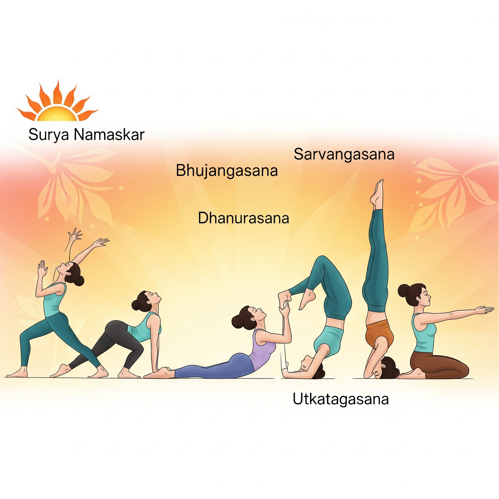

While often seen as just relaxation, specific yoga practices can significantly impact weight management by stimulating the thyroid, improving digestion, and reducing stress-related eating.
Top 5 Metabolic Boosting Poses
- Surya Namaskar (Sun Salutation): 12-step sequence that engages all major muscle groups
- Bhujangasana (Cobra Pose): Stimulates abdominal organs
- Dhanurasana (Bow Pose): Massages digestive organs
- Sarvaṅgāsana (Shoulder Stand): Supports thyroid function
- Utkatasana (Chair Pose): Builds strength while elevating heart rate
Scientific Evidence
A 2020 study found that participants who practiced yoga 3x weekly for 12 weeks:
- Lost 2.5x more weight than control group
- Reduced waist circumference by 1.5 inches
- Improved insulin sensitivity by 23%
Beginner Routine
Try this 20-minute sequence:
| Pose | Duration |
|---|---|
| Sun Salutations | 5 rounds |
| Cobra Pose | 30 seconds |
| Bow Pose | 30 seconds |
| Shoulder Stand | 1 minute |
| Chair Pose | 1 minute |